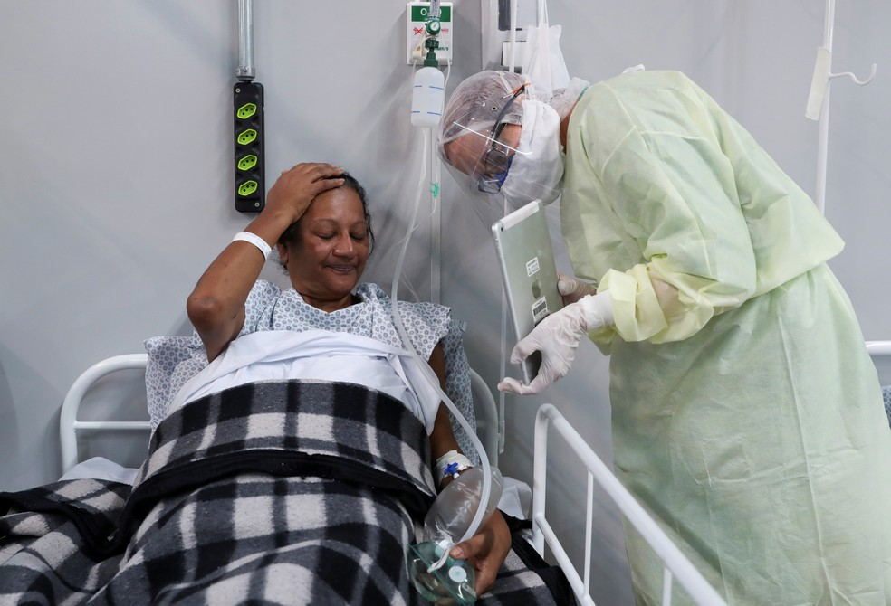

Chamadas por vídeo são implementadas para ajudar na recuperação de pacientes nos hospitais de campanha. Recurso também ajuda médicos a conversar com as famílias.
Maria Lúcia Farias abre um sorriso ao olhar para um tablet: depois de quatro dias internada com o novo coronavírus em um hospital de campanha em Santo André (SP), ter aquele aparelho em sua frente significava que, finalmente,ela poderia se comunicar com a família. Em meio às diversas dificuldades físicas que a Covid-19 representa, o isolamento torna a luta contra a doença ainda mais complicada. Por isso, os profissionais do hospital instalado em um ginásio da cidade no ABC Paulista passaram a utilizar o recurso tecnológico como forma de diminuir a distância dos familiares.
Como fazer ligações em vídeo para várias pessoas ao mesmo tempo:
A voz rouca de Maria Lúcia, de 60 anos, bem como a máscara de oxigênio que ela é autorizada a retirar por um instante assim que uma psicóloga se aproxima com o tablet, denunciam alguns dos impactos do coronavírus. Conversar com os familiares muda seu ânimo: ela logo conta como os médicos e enfermeiros são "maravilhosos" e garante que está respirando melhor. "Eu não tinha conseguido falar ainda com a minha família, e agora, hoje, eu fiquei muito feliz, porque eu falei duas vezes", conta ela com um sorriso. A rotina pesada em Santo André é dividida entre a alegria por pacientes que apresentam melhora e têm alta, traduzida por séries de aplausos dos próprios colegas de leitos, e a apreensão pela chegada de novas pessoas infectadas pelo coronavírus.
Recurso também ajuda médicos
Em meio às movimentações incessantes de profissionais da saúde na quadra esportiva ocupada por leitos, o superintendente dos hospitais de campanha de Santo André, Victor Chiavegatto, comemora o recurso encontrado para que os pacientes revejam suas famílias de forma virtual. "Ele (paciente) tem que ficar aqui, isolado do mundo -- num bom tratamento, mas a gente sabe que é muito difícil ficar sozinho. Então ele pode conversar com a família nesse momento, e depois o médico liga e conversa com a família para passar o boletim médico", disse Chiavegatto, paramentado com equipamentos de proteção. São Paulo é o primeiro Estado mais afetado pelo coronavírus no Brasil, com mais de 63 mil casos confirmados e 4.800 mortes causadas pela doença. No Brasil todo, são mais de 254 mil casos e 16,7 mil óbitos. Maria Lúcia não foi a única privilegiada em conversar com a família pelo tablet. Alguns leitos ao lado, outro que se alegra ao ver seus entes queridos é Fabiano Santana de Souza, que faz um pedido para quem está do outro lado da linha: "Guardem um pedaço de bolo." Enquanto ele enfrenta a Covid-19 no hospital de campanha, a filha comemora 12 anos de idade em casa. O presente de Fabiano foi mostrar que, apesar da tosse seca que o acomete a cada dúzia de palavras, ele está se recuperando. "Hoje a gente conseguiu fazer essa videoconferência... Dá um alívio grande, saber que está todo mundo bem, tudo em paz. E é uma forma de eles saberem também que a gente está se recuperando", afirmou
'Tive que reconfortar minha mãe enquanto ela morria – por chamada de vídeo'
A alegria no rosto pela reaproximação com os familiares diante de uma situação tão difícil é também uma interferência positiva para a recuperação dos pacientes, algo que está diretamente ligado ao estado emocional de cada um deles, segundo a psicóloga Rita Calegaria, que acompanha as videoconferências. "Um dos principais sintomas da Covid é a falta de ar, então quando eles estão muito ansiosos, muito assustados, piora esse sintoma. E quando eles falam com a família, quando a família fala com eles, eles se acalmam, ficam mais otimistas, ficam mais seguros", disse.
Assista a Notícias: